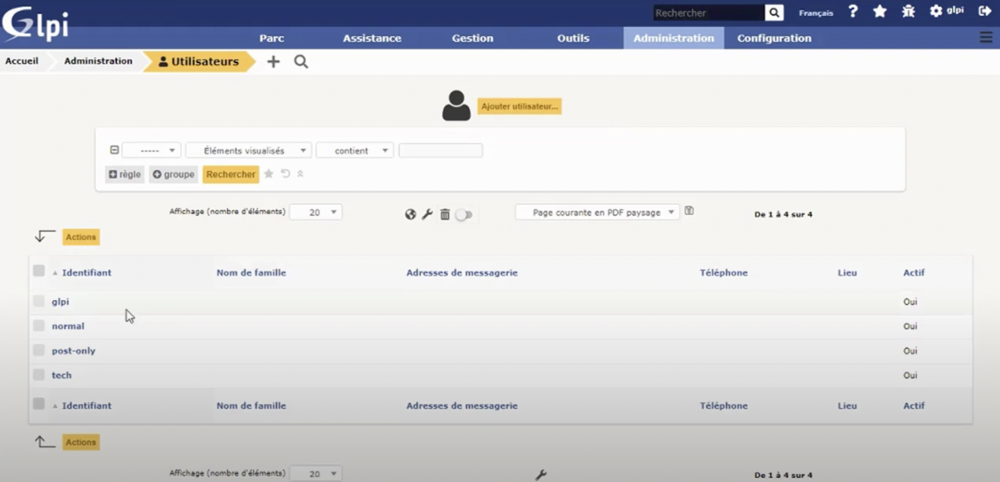

Utilisation de GLPI

Ce tp constitué le premier chapitre de la première année de BTS SIO. Ce tp avait pour finalité la découverte, l'installation et l'utilisation de GLPI. Au cours de ce tp, plusieurs pas à pas on était effectué permettant la documentation de l'installation et paramétrage du GLPI et son utilisation.
Installation de GLPI
Installation OCS Inventory
Création de compte

Environnement
Voici les différents logiciels utilisées pour mener à bien ce TP :
- VirtualBox
Compétences associées
Gérer le patrimoine informatique :
- Recenser et identifier les ressources numériques
- Mettre en place et vérifier les niveaux d'habilitation associés à un service
- Vérifier les conditions de la continuité d'un service informatique